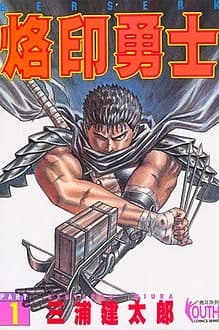
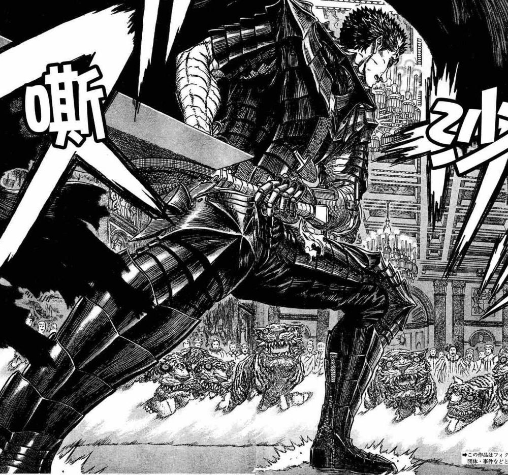
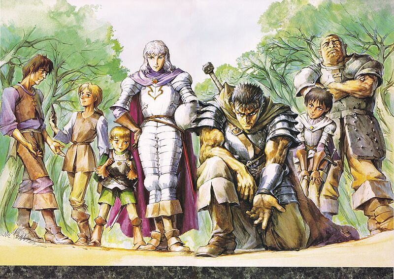

《剑风传奇》
（日语：ベルセルク，英语：Berserk）是日本漫画家三浦建太郎所作的奇幻漫画，现时在白泉社出版的双周刊杂志《YOUNG ANIMAL》不定期连载中。系列累计发行量已超过4000万本。

概要
舞台为以中世纪欧洲为蓝本的“剑与魔法世界”，描绘身背长度超越自身大剑的剑士格斯复仇之旅的黑暗幻想故事。书名“ベルセルク”来自北欧神话中的狂战士（法文：berserk）。
作品中表现了光明与黑暗的强烈对比与扭曲，这也正是《剑风传奇》的最大魅力。把灵魂出卖给恶魔的古力菲斯作为黑暗的神之手，却被称为“光之鹰”，而与黑暗抗争的凯兹，却是人们被禁止提起的“黑色剑士”；喜爱性虐的宗教骑士团团长，喜爱娈童的总督大人，对女儿产生情欲的国王，这些表里不一，黑白颠倒的人们，构成了书中形形色色的角色。
异于一般战斗系作品，《剑风传奇》漫画最大最吸引人的特点是“强烈的涌来的感情”。在阅读过程中读者可经历到如洪水一样排山倒海而来、憎恶、友爱、妒忌、痛苦、怨恨、向往、悲伤、执著、绝望。三浦建太郎创作的《剑风传奇》的世界，是一个典型的人性旋涡。与其说人被掌握在命运手中，不如说是被人类本身的情感所玩弄。欺骗、背叛、伤害，这些字眼，完完全全出自于人类为之自豪的感情。
《剑风传奇》架设于一个血统决定一切的社会里。在那个地方，无所谓公正与公平。寄生在下层阶级上的贵族，不断以荣誉、服从、高贵、正统来抹杀下层人的存在。而在那种社会里，出生平民的古力菲斯却远远望着远方的城堡，心中涌起无限的向往。对权力的向往，使得他走上了一条由杀戮铺成的梦想之路。古力菲斯的野心与才能造就了鹰之团的盛名。他的梦想同时也吸引了无数也想达到那个城堡的人义无反顾地追随着。
——在这个世界之上，人类的命运究竟是否由超越其上的某种力量或法则来掌控？神之手存在吗？至少有一点，人类连控制自己意志的自由都没有。
1989年在《YOUNG ANIMAL》前身白泉社出版的月刊《月刊Animal House》十月号开始连载。剑风传奇画风厚重阴暗，营造出黑暗的险恶氛围，而动作场面节奏明快且充满魄力。剧情以冒险与战争为主，随着故事推展而逐渐披露出独特的世界观。书中有许多血腥残忍的暴力场面，在许多国家地区因出版法规而有所删改、或列为限制级，但仍广受好评。2002年获得第6届手冢治虫文化赏的最佳漫画奖。
20年以上的长期连载作品，屡次出现数个月停刊情况。作者本人还发表过“死之前不知能否完成结局”的恐惧言论。此外，作者在《YOUNG ANIMAL》杂志的卷末评语屡次叙述著有关自己对健康情况的不安，持续停载期间中也陷入在过劳的执笔工作。
在其他媒体的扩张上1997年改编为电视动画，并曾推出电视游戏与交换卡片游戏。2010年公开制作新版动画的消息。作为《Berserk Saga Project》的第1作，漫画原作“黄金时代”篇将被制作成3部剧场动画，其中首部剧场版动画《剑风传奇 黄金时代篇I 霸王之卵》于2012年2月4日上映。
格斯的武器：
- 斩龙剑
- 狂战铠
- 义手炮
- 连射弩
- 飞刀
- 爆裂弹
- 贝黑莱特
世界观
故事开始阶段的舞台为米特兰王国，大陆的不同国家，围绕领土和信仰问题，几百年间持续相 争。远古时代便有人信奉泛灵论，不过现在以由法王厅为中心的宗教、萨满教和崇拜偶像为主 流。在人以外也存在着超自然生物，不过现在大多数人类都不再看到他们的身影了。
人类社会存在社会阶级，采取农奴制，政治及法权由贵族等特权阶级垄断。各国主要以君主制组 成，周边各国执行着封建体制。存在银行业和贸易业，但作品中无出现过纸币，金币和银币是主 要的流通货币。在科学技术上，已经开发出火药和大炮，但手枪还没普及，在战争中剑、矛、弓 箭(弩)为主要武器，而船只就以一般帆船为主。
法王厅教圈国家仿照中世纪欧洲黑暗时代的风俗，而库夏帝国就是仿照中世纪南亚的风俗。
世界
现世
有肉体的生物生活的物质世界，除了一部分特别例子基本上不存在妖精和怪物。一般来说不受幽 界影响，但自从格里弗斯转生为神之手之后就开始慢慢被幽界侵蚀。
幽界
和现世形成表里一体的存在，死者灵魂和传说生物居住的精神世界。属于幽界的生物，不像现世 的生物存在肉体，只会在相信他们实际存在的人面前存在。同一性质的幽体聚集会产生被称为 “局”的领域，幽界有着不同深度的领域，有肉身的生物想踏入深层领域基本是不可能。
深渊
幽冥的深层的思念旋涡，被认为是地狱的一部分。
暗之领域
幽冥的领域之一。存在着无限地生出兽鬼和巨鬼的“暗之子宫”。
隙缝的世界
现世和幽界互相重叠的领域。同现世重叠的一般是幽界的浅层。因此重叠的幽界就算有肉体的人 都能进入。在隙缝中精神力量对物质较容易起作用。魔术士主要把隙缝的世界作为住处。被刻上 烙印的人，经常被迫在隙缝里。
灵树之森、灵树之馆
在现世200年前枯萎的大树，巨木信仰中的偶像，因为在现世存在力大，可以在隙缝的世界生存 和保持嫩叶繁茂，灵树之馆的魔女科罗拉的住处。灵树周围在冬天也很暖，同时有治愈的力量。 被科罗拉在森林周围张开禁制结界，普通人不能进入。
妖精乡
幻象世界
现世和幽界完全同化的世界。巨鬼、兽鬼、九头蛇、龙、鸟身女妖、独角兽等等，一般认为只在 故事中出现的传说生物、怪物，理所当然地存在的世界。

